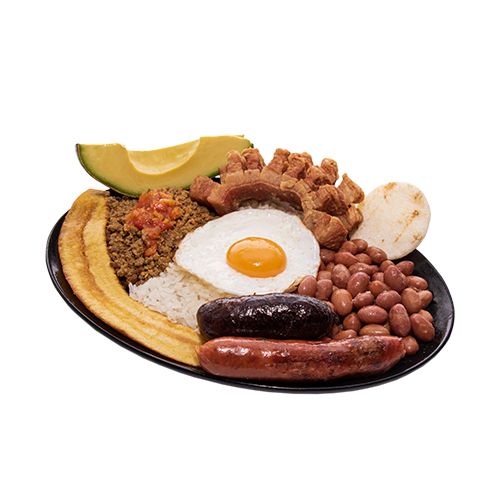

Bandeja Paisa

La bandeja paisa es, sin duda, uno de los platos más reconocidos de la gastronomía colombiana. Es tradicional de las tierras antioqueñas, pero se consume en todo el país e incluso en el extranjero, donde ha llegado de la mano de migrantes colombianos.
¿Qué ingredientes se necesitan para hacer una bandeja paisa para 6 personas?
- 3 tazas de fríjoles de cargamanto rojos
- 2 libras de carne molida
- 2 libras de chicharrón
- 2 libras de carne pulpa molida
- 6 chorizos
- 6 huevos
- 1 libra de arroz
- 3 Plátanos maduros
- 4 cebollas
- 4 tomates grandes
- 1 zanahoria mediana
- Medio plátano verde
- Aceite
- Sal al gusto
El éxito de la bandeja paisa está en la preparación de los fríjoles. Para que tus fríjoles sean más fáciles de cocinar, debes ponerlos a remojar en un recipiente con agua. Déjalos toda la noche para que estén más blandos a la hora de ponerlos a cocinar.
Prepara el hogao picando finamente las cebollas y los tomates.
En una sartén con un poco de mantequilla y ajo al gusto, ponlos a sofreír durante diez minutos. Para la cocción de los fríjoles utiliza la olla exprés, esto te ahorrará un poco de tiempo. Agregar y cubrir con agua y échales la mitad del hogao, medio plátano verde y la zanahoria mediana partida en trozos. Déjalos pitar aproximadamente por media hora. Después que hayan pitado, sácales la zanahoria, el plátano y una taza de agua y licuar. Agrega esta mezcla a los fríjoles nuevamente y ponlos a fuego medio –bajo a espesar.
